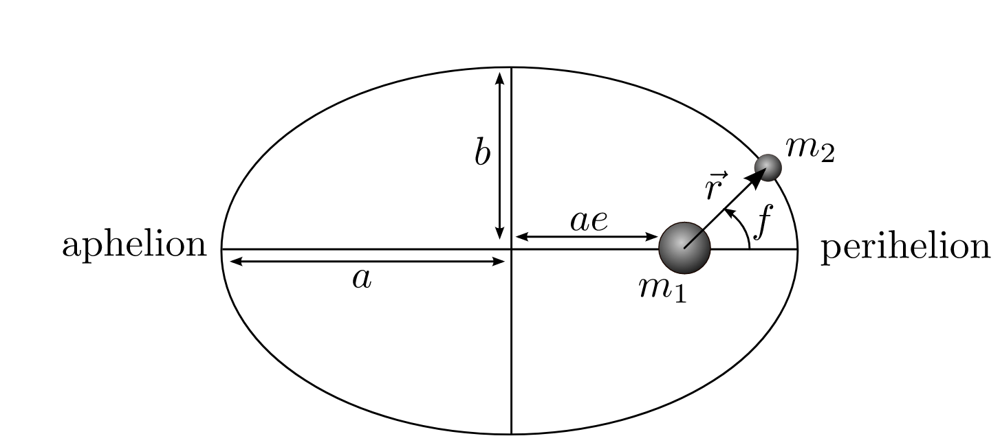

Forrige side🙂 🙁EllipserFORUM

Når vi snakker om ellipsebanene i Keplers første lov, enten det gjelder planetenes baner rundt sola eller en satelitts bane rundt en planet, så ligger altså den ene massen m1 i brennpunktet og den andre massen m2 går i ellipsebane rundt. Det er noen ord til som du må lære her: periapsis er punktet i ellipsebanen der objektene er nærmest hverandre og apoapsis er punktet i ellipsebanen der de er lengst fra hverandre. For en planets bane rund sola så brukes ordene perihel og aphel isteden.